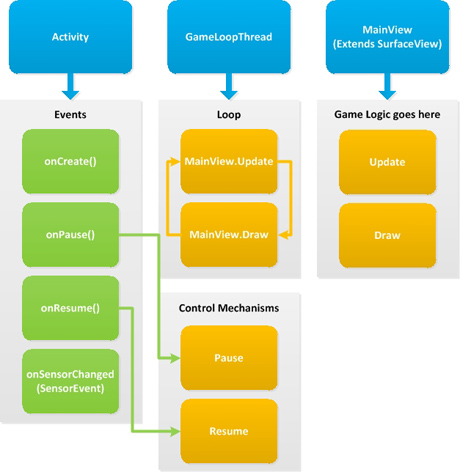

Android smartphones are gaining popularity fast, here in India. I recently played a lot of fun games on one of my friend’s Android phones, and decided to whip one up myself. So I started learning and finished the game in about a week. I ain’t releasing the game or screenshots just yet, though. I had a little difficulty initially figuring out the basic game architecture. API documentation rarely helps the beginner, and the Android documentation is no different. I got most of the info through stackoverflow.com. So, here is an explanation of my understanding of the big picture.
The Android Activity class is your starting point. It is created for you when you create a new Android project. It receives the main event triggers as shown above. A new thread should be created for our game loop. It maintains the frame rate of our game. This a good article regarding the game loop. Also, write a new class inheriting the SurfaceView class. I’ve called mine 'MainView'. The game loop thread should call MainView.Draw() and MainView.Update() methods around 30 times per second (depends on your target frame rate).
All your game logic and classes should reside in the MainView class. For example:
public class MainView extends SurfaceView
implements SurfaceHolder.Callback
{
private Player mPlayer;
public void Update()
{
mPlayer.Update();
}
public void Draw()
{
mPlayer.Draw();
}
}
Android programs are event-driven. The folowing events are important:
onPause
onResume
onSensorChanged
surfaceCreated
onTouchEvent
onKeyDown
Remember to start the thread only if it is not running. If the thread.start() is called when it is already running, the game will crash. On correct implementation, the game will pause correctly if the home button is pressed or if a call is received during gameplay.